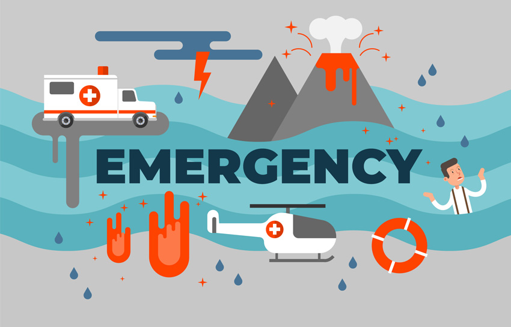
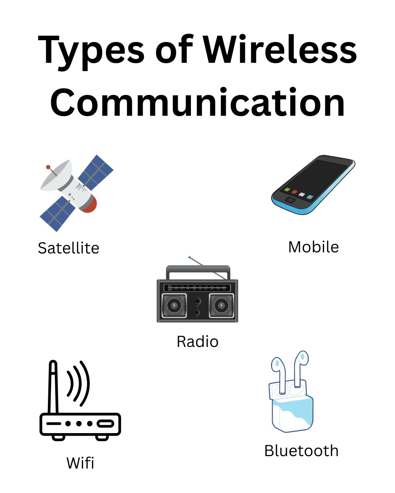
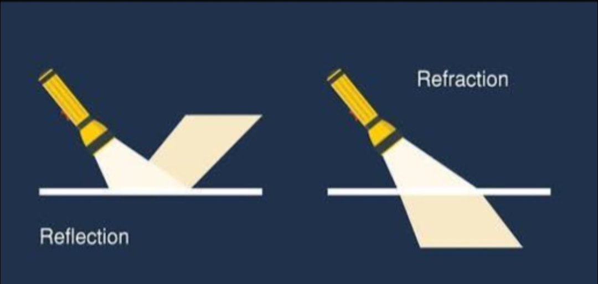
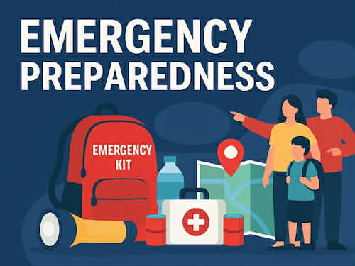

DISASTER AWARENESS
Science Demonstration
Disaster awareness is important because disasters can happen at any time. Science helps us understand how communication technologies work and how they can help people during emergencies.

Using Recycled Materials
For our demonstration, we can use recycled materials such as cardboard, plastic bottles, old paper, and used boxes. These materials can be used to create a simple model of an emergency communication system. Using recycled materials also helps reduce waste and protect our environment.
Communication Technologies
Communication technologies are useful during disasters. Radios, mobile phones, and other devices allow people to receive warnings and send important information. These technologies help families and communities communicate during emergencies.

Electromagnetic Waves
Electromagnetic waves are used in many communication technologies. Radio waves can carry information from one place to another. For example, emergency radio broadcasts can give people warnings and instructions during a disaster.

Reflection and Refraction
Reflection happens when a wave or light bounces back after hitting a surface. Refraction happens when light changes direction as it passes through another material. These scientific ideas help us understand how waves and light behave.

Emergency Preparedness
Being prepared can help keep people safe during disasters. We should know the emergency numbers, prepare an emergency kit, listen to official warnings, and know where to go during an emergency.
- Prepare an emergency kit.
- Keep a radio or communication device ready.
- Listen to disaster warnings.
- Know the safe evacuation area.
- Stay calm and follow safety instructions.

Our Message
Science and technology can help us become more prepared for disasters. By understanding electromagnetic waves, reflection, and refraction, and by using recycled materials for awareness activities, we can learn how communication can help save lives during emergencies.